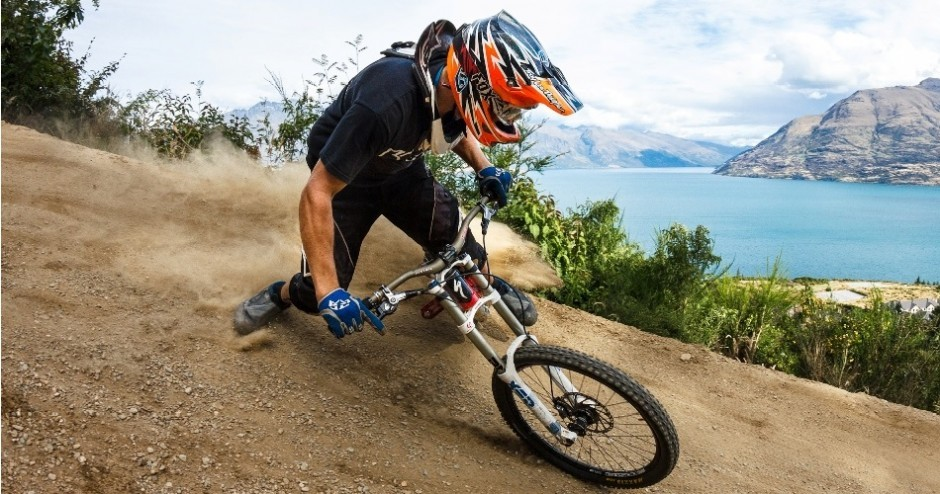

Queenstown is famous for being New Zealand’s favourite four season destination. It is a natural playground providing
an incredible backdrop for a range of sights to see and things to do for adventurers of all persuasions. Each of the
seasons has its own special vibe in here, and the great thing is that most activities can be accessed all year round.
Skyline Gondola:
Ride the Gondola high above Queenstown to discover a view spread out in a spectacular 220-degree panorama,
with breath taking views of Coronet Peak, The Remarkables mountain range and across Lake Wakatipu to Cecil and Walter Peaks.
Ledge Bungy:
Ride the cable car up to the 400 metre high Bobs Peak, where you will be treated to a visual feast involving
panoramic views over Queenstown and the turquoise waters of Lake Wakatipu.Clip on your harness and then decide how you’d like to go down.
White-water-rafting:
How to have fun on a rainy day? Queenstown’s original adventure since 1974. With the best water activities in New Zealand from half day to
multi day - from action packed to relaxed!

Mountain Biking and Cycling in Queenstown:
Queenstown offers a wide range of biking tracks and trails for all styles of biking and all levels of fitness. Here you
will find easy scenic tracks, spectacular lakeside or backcountry trails, road rides, jump parks and even heli-biking trips! For mountain bikers, Queenstown offers the Southern
Hemisphere’s only gondola-accessed downhill mountain biking park.
Queenstown Snowmobiles:
Queenstown Snowmobiles offers the only wilderness snowmobiling experience in New Zealand. We have exclusive access to trails & back country riding,
by way of helicopter only, with breath taking views across to Mt Cook, Mt Aspiring and down to Stewart Island on a clear day. All our tours are professionally guided and cater for
individuals, families and small groups.
Family Fun:
Queenstown, New Zealand is an exciting and fun-filled family holiday destination with lots of things to do with kids.
There are many activities in Queenstown that are suitable for children and most companies offer kids’ prices or even ‘kids go free’ promotions at certain times of the year.
Refuel Yourself
Food is an integral part of your holiday experience, and Queenstown is renowned globally for its great food, wine and legendary nightlife.It offers some of the best restaurants and bars
in New Zealand. Delectable food and a great night out are always on the menu. There are over 150 bars and cafes in the Queenstown region, with everything from fine dining, restaurants owned
by celebrity chefs, family-friendly eateries to boutique dessert diners. Not to mention award-winning cafes and iconic burger joints that command a serious following.
Prime Waterfront Restaurant and Bar
Prime Waterfront Restaurant and Bar is located on the water's edge with panoramic lake and mountain views. Prime's chef specialises in char-grilled steak and
seafood you can even bring your own freshly-caught trout for the chefs to cook. Prime's drinks list features many local pinot noir labels as well as cocktails and numerous beers to choose from.
Millbrook Resort-Kobe Cuisine
Come and enjoy some exquisite Japanese food while you take in the breathtaking scenery at Millbrook.Kobe offers inspired Japanese flavours that
have a contemporary twist and its new sharing menu will delight your tastebuds. Sake is the drink of choice at Kobe, so kampai and unwind as you watch our chefs cook up a storm on the Teppanyaki grills.
Finz Seafood & Grill Queenstown
Finz Seafood & Grill offers casual relaxed waterfront dining right in the heart of Queenstown. Finz is a delightful bustling seafood bistro where you can enjoy the
wholesome flavours of New Zealand including succulent seafood, premium steaks, New Zealand Lamb and the popular daily Fresh Fish Specials. With great food and great prices in a fabulous location, Finz offers
a unique dining experience.
Sasso Italian Dining
At Sasso we believe that cooking Mediterranean cuisine is a craft and we serve our food with passion. We insist on using the freshest local produce with a few authentic
Italian specialties thrown in to create the finest flavours. Whether its a relaxed pizza and beer with friends or a five-course meal from our Thrust the Kitchen menu matched with Central Otago wine,
you'll be sure to enjoy your dining experience in Sasso's unique, relaxed setting.
Saffron
Arrowtown's Saffron located in historic Arrowtown's main street is one of the hottest restaurants in the Queenstown-Arrowtow Basin. Saffron Restaurant is ideally suited to Central Otago seasons.
With a large outside seating area for the spring/summer seasons and a big open fire for the autumn and winter, it provides a relaxed, friendly environment.
Minus 5º ICE BAR
Minus 5º ICE BAR is Queenstown's COOLEST experience and an adventure you'll never forget. Come down to Minus 5º ICE BAR and be absorbed into a world crafted purely of ICE.
Everything from the walls and furniture to the bar and intricately hand carved statues are made from over 18 tonnes of crystal clear ICE. Even our infamous cocktails are served in glasses made entirely out of ICE!
Zephyr
Zephyr is Queenstown's only rock bar and the bar is constructed from materials rescued from the Christchurch earthquake and furnished in a shabby-chic eclectic style. Live music, big bots and
a pool table make this the ideal spot from early until late!
Cookie Time Cookie Bar Queenstown
Check out the Queenstown Cookie Bar! The Cookie Bar offers a fresh take on the Cookie Time brand. Vibrant, fun and interactive, it's the hottest place in town for
delicious HOT Cookies, Freakshakes, S'mores, Ice Cream and more!